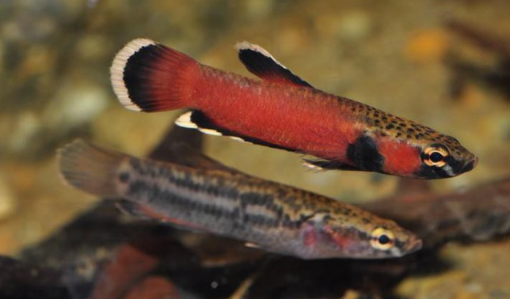

Systématique
- Ordre : Anabantiformes
- Famille : Osphronemidae
- Genre : Betta
- Espèce : Betta albimarginata
- Descripteur : Kottelat & Ng, 1994

Betta albimarginata est un petit poisson combattant d'Asie du Sud-Est, originaire du bassin Sebuku en Kalimantan Timur, Bornéo (Indonésie). Il s'agit d'une espèce rare et endémique à une région très limitée.
L'épithète spécifique « albimarginata » fait référence aux caractéristiques distinctives du poisson : les bordures blanches de ses nageoires. La taille maximale connue est d'environ 5 cm, bien que beaucoup de spécimens ne dépassent pas 3 cm en captivité.
Le corps présente une coloration jaune-orange à rouge-orangé selon l'humeur, avec des reflets pouvant virer au noir lors du stress. L'opercule affiche une teinte rougeâtre, tandis que la queue et la nageoire anale sont ornées d'un liseré noir et blanc distinctif.
Betta albimarginata est généralement paisible et timide comparé à d'autres espèces du genre. Cependant, les interactions entre mâles lors de l'accouplement peuvent donner lieu à des scènes d'intimidation.
En dehors de la période de reproduction, la femelle tend à être dominante et peut embêter les mâles. L'espèce préfère être maintenue seule ou avec des petites espèces pacifiques compatibles, car des poissons plus gros ou vigoureux risquent de l'intimider.
Il peut néanmoins être maintenu en paire ou en groupe restreint, affichant alors des interactions comportementales intéressantes. Un aquarium bien planté avec des zones ombragées et des abris est essentiel pour son bien-être.
Mode : incubateur buccal; mâles adultes sont plus colorés avec une tête plus large que les femelles.
Après une longue période de cour, les ovules et la laitance sont libérés lors d'une « étreinte » typique des anabantoïdés, au cours de laquelle le mâle enveloppe son corps autour de celui de la femelle. Le mâle incube ensuite les œufs dans sa bouche.
Durée d'incubation : 13 à 18 jours selon la température. La mise en condition à l'aide d'aliments vivants (daphnies, larves de moustique, cyclops) favorise la reproduction naturelle.
Dimorphisme sexuel : le mâle est plus coloré avec une tête plus large, tandis que la femelle est légèrement plus grande et trapue, avec un ventre plus arrondi.
Espérance de vie : environ 2 à 3 ans en captivité, typique des petits poissons combattants.
Betta albimarginata fréquente naturellement les ruisseaux forestiers à courant modéré, caractérisés par une eau très peu profonde (5–10 cm) au milieu des racines de plantes marginales et de la litière de feuilles mortes. Ce biotope produit une eau acide, sombre et riche en tanins (eau couleur thé).
Répartition

Origine naturelle :
- Bassin Sebuku, Kalimantan Timur, île de Bornéo, Indonésie.
- Ruisseaux forestiers des régions côtières d'eau douce.
- Espèce endémique à une région très limitée.
Betta albimarginata est l'une des espèces les plus rares du genre Betta. Son aire de distribution restreinte et fragmentée en fait une espèce d'intérêt scientifique majeur pour la conservation.
Paramètres de maintenance
Température : 21 à 27 °C, optimale autour de 24–25 °C.
pH : 5,0 à 6,5, eau acide à légèrement acide.
GH : 1 à 5 °dGH, eau très douce.
Courant : faible à modéré; la filtration ne doit pas être trop forte (exhausteur possible).
Volume conseillé : minimum 20 L pour un couple, 50 L pour un groupe de trio-harem. Eau peu éclairée, éclairage tamisé recommandé.
Décoration : racines, bois flotté, pots en argile, feuilles mortes pour créer zones ombragées et abris.
Régime alimentaire
Régime : insectivore; dans la nature, le poisson se nourrit d'insectes aquatiques, invertébrés et zooplancton.
En aquarium, il préfère les aliments frais ou surgelés aux aliments secs (flocons, granulés). Les aliments vivants (daphnies, artémias, larves de moustique, cyclops, petits vers) sont idéaux pour son bien-être et favorisent les reproductions naturelles.
La maintenance de cette espèce délicate demande une approche attentive à l'alimentation pour assurer son succès. Un régime varié et l'utilisation d'aliments de qualité facilitent grandement son élevage.